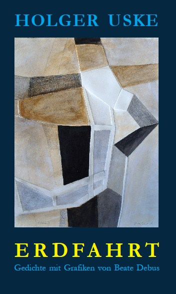
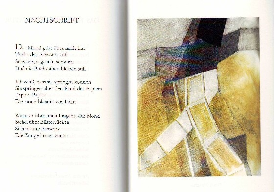
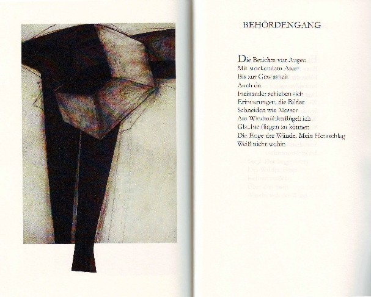

Der Lyrikband aus dem Jahr 2011 versammelt 58 Gedichte aus den Jahren 2000–2010 mit lediglich drei Ausnahmen: „Laner Cost Priory" von 1993 und „Wenn einer geht" sowie „Die Stille der Straßen an einem Sommerabend" aus 2011. Des Weiteren flossen auch zahlreiche Texte seiner vorangegangenen literarisch-musikalischen Programme ein. Herausgekommen ist ein Kaleidoskop des Lebens aus dem Blickwinkel des Dichters Holger Uske – ein poetischer Einblick in seine individuelle Erdfahrt.
Ergänzt und bereichert wird das Buch durch 8 Arbeiten der Grafikerin und Holzbildhauerin Beate Debus, mit der Uske schon vor 12 Jahren seinen ersten bei Quartus erschienenen Gedichtband „Magische Momente" gemeinsam gestaltet hatte. Diesmal sind vielfach expressive Arbeiten in Mischtechnik, zum Teil mit Prägung, den Gedichten zugeordnet worden. Sie konnten in Farbe gedruckt werden und entfalten so ihren ganzen Reiz in Korrespondenz mit den Texten.
Wie von Uske gewohnt, unternimmt er poetische Ausflüge in Landschaften und setzt manch eine Begebenheit ins lyrische Bild. „Vom Leuchten eines Zweiges im Februarwald" ist da ebenso die Rede wie vom „Stoff, aus dem die Tage sind". Er berichtet von einem Hinterhof, in dem er der Liebe begegnet, von Wolken überm ostpreußischen Trakehnen, reflektiert über seine Erfahrungen mit dem Thema „Grenze" oder das „Ende der Literatur". Schließlich wagt er gar einen „Blickwinkel, außerirdisch", um so seinem Titelthema „Erdfahrt" näher zu kommen. Das schließt letztlich auch „Die Stille der Straßen an einem Sommerabend" ein, deren Beschreibung zweifelsfrei auch auf Suhl zutreffen könnte …
DER STOFF, AUS DEM DIE TAGE SIND
(Rückseite des Bandes)
Ich bin es selbst, der ihn webt
Sich an ihm reibt
Ihn wegwirft, anlegt
Tarnkappe, Flügel
Bleimantel morgens
Wenn ich noch taub bin
Vom Traum. Mit Jedermannsflicken
Ziehe ich aus. Kehre heim
Mit frisch gewetzten Stellen

Grafiken von Beate Debus:
Kreuzschreiten / Raumtasten
BLICKWINKEL, AUSSERIRDISCH
Wortgetrieben
Eingeschnürt von Satz-
Passagen, Vorsehungen
Von Angst gesteuert:
Schlachthof Erde
Wundervoller Spielort
Liebe. Wo noch
Klingt die Luft davon
Nachtmahrfähre
Traumplanet
Jedes Wort ein Faden
Im feinen Netz des Alls

BEHÖRDENGANG
Die Berichte vor Augen
Mit stockendem Atem
Bis zur Gewissheit
Auch du
Ineinander schieben sich
Erinnerungen, die Bilder
Schneiden wie Messer
Am Windmühlenflügel: ich
Wollte mit dir fliegen
Die Enge der Wände. Mein Herzschlag
Weiß nicht wohin